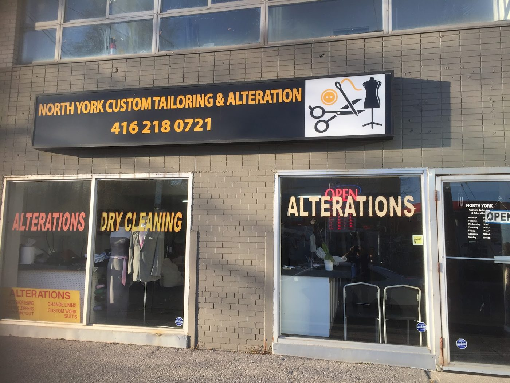

Tailor · 4632 Yonge Street, North York
Alterations & custom work, on Yonge Street.
A tailor shop at 4632 Yonge Street. Reviewers talk about Mati and the team, careful measurements, and clothes that were written off elsewhere — including a pair of ALO pants hemmed too short at another shop. Call (416) 218-0721.
- Alterations
- Pants shortening
- Zippers & lining
- Custom work & suits
- Dry cleaning (on the window)
What the shop takes in
Alterations
A yellow sign in the shop window lists pants shortening, change zippers, take in/out, and change lining. Lyric 416 brought two pairs of ALO pants that another business had hemmed too short and wrote “all I can say is WOOOWWW.”
Custom work and suits
The same window sign lists custom work and suits. Nick G11 gave Matti three suits bought abroad; he “took detailed measurements and produced fabulous results.” A Facebook-page copy for this shop (same name, address and phone, read 2026-11-16) says it specializes in custom suits and shirts in a European cut, and that it has over 20 years of experience. That text is from the copy, not from Google.
A shop on Yonge, with dry cleaning in the window
Google lists the business as a tailor. The storefront also says Dry Cleaning, and an OPEN sign sits over Alterations. Mathieu Grindlay was sent around the corner for a last-minute press and laundry job the shop couldn’t take; he called that “business integrity.”
Services above come from the shop’s own window signage (visible in a Google listing photo), from Google reviews read on 2026-11-16 or copied by the CanadaCompanies directory, and — where noted — from a Facebook-page copy. No prices are listed here. Call (416) 218-0721 if you have questions about a garment or a turnaround time.
4632 Yonge Street, North York
A tailor shop on Yonge, just south of Sheppard
Monday to Friday, 9:30 a.m. to 6 p.m. · Saturday 10 a.m. to 4 p.m.
North York Custom Tailoring and Alterations is a tailor at 4632 Yonge Street. Reviewers name Mati (sometimes spelled Matti) as the owner, and they talk about careful work and a team that listens. The hours on this page are the ones on Google today; the door and a Facebook-page copy show different times, which are noted under Hours.
“Mati and his team at true professionals. Friendly, responsible, fair, and most importantly of all, masters at what they do.”
Mark Shpuntov, Google review (as of Nov 16, 2026). Quoted as written.
What customers say
4.8 ★ from 188 Google reviews (checked Nov 16, 2026). Quotes are word for word. Each one says where it was read: on the Google listing itself, or on a public page that copies reviews. Google shows only a handful of reviews without signing in, so some quotes are Google reviews copied by the CanadaCompanies directory.
★★★★★
I brought 2 pairs of ALO pants (the wind breaker material, tricky fabric to work with) that were hemmed too short by another business, I really had no hope. I picked up today and all I can say is WOOOWWW! Even the new hem fold size was incredible! Sooo thin, barely noticeable. Ive asked several other places if they cld make the hem fold as close to original as possible and they all said no, it was too thin. They gave my the length I needed, I can finally wear them! Ill be bringing all my clothes to this place frm now on!.
★★★★★
Amazing! Mati and his team at true professionals. Friendly, responsible, fair, and most importantly of all, masters at what they do. They take great care in getting the details right. They’re always happy to listen to feedback and adjust their approach based on what the customer wants. Every item I’ve brought them has always been altered and tailored with the highest quality. Prices are very fair, and work is completed promptly and on time. Highly recommended!
★★★★★
Did not have the pleasure of working with them directly - I was looking to have a suit pressed and a shirt laundered last minute for a wedding and he told for time it would be best to go with the business around the corner since they have inhouse equipment suited to what I was looking for.
This kind of business integrity is an incredible sign and the staff seemed unbelievably professional. Got the suit ready in time and might not have been so lucky without their recommendations.
★★★★★
Matti is an amazing tailor, I gave him 3 suits that I had picked up from another country that I couldn’t have finished. He took detailed measurements and produced fabulous results. I’ll be bringing all my alterations to Matti going forward.
★★★★★
Great! I feel so lucky to have a talented alterations tailor nearby. Mati and his colleagues have done some great work for me. I’ve always been completely satisfied with their work. They’re very friendly, reliable, easy to work with, and reliable. Really good communication, too. Highly recommended. Many thanks to Mati and his team.
★★★★★
Kind and skillful tailor! I paid around $13 for hemming my husband’s pants and don’t know if the price is good but I am happy with the quality of the service that they provided
★★★★★
I went to get a zipper fixed. However, when I picked up the item they said they looked it over(well they said they fixed it,lol) & there was no need to replace true zipper & charged me just over half the quoted price. I was fine with this if the issue had been fixed. However, I had to return another day as the issue wasn’t fixed & the zipper did indeed need to be replaced. After replacing the zipper, they honoured the original quoted price & only charged me the difference; as it should’ve been. …that’s good customer service!! …& the workmanship was very good. …5*
From the shop
Real photos from North York Custom Tailoring and Alterations’ public Google listing and its customers’ reviews. Tap to enlarge.
Visit the shop
4632 Yonge St
North York, ON M2N 5M1
Yonge Street, North York
Facebook
| Monday | 9:30 a.m.–6 p.m. |
|---|---|
| Tuesday | 9:30 a.m.–6 p.m. |
| Wednesday | 9:30 a.m.–6 p.m. |
| Thursday | 9:30 a.m.–6 p.m. |
| Friday | 9:30 a.m.–6 p.m. |
| Saturday | 10 a.m.–4 p.m. |
| Sunday | Closed |
These are the hours on Google today: 9:30 a.m. to 6 p.m. Monday to Friday, 10 a.m. to 4 p.m. Saturday, closed Sunday. An hours list on the shop door (visible in a Google listing photo) shows Monday 9 to 7, Wednesday to Friday 9 to 7, Saturday 10 to 6, Sunday closed; Tuesday’s closing time is hidden by an OPEN sticker. A Facebook-page copy shows Monday to Thursday 10 a.m.–6 p.m., Friday 10 a.m.–7 p.m., Saturday 10 a.m.–6 p.m. canadanear.com shows weekdays starting at 9:00. Google is used here. Please call (416) 218-0721 if you are coming near opening or closing time.